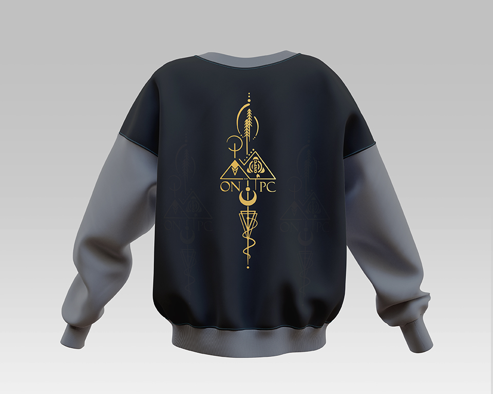
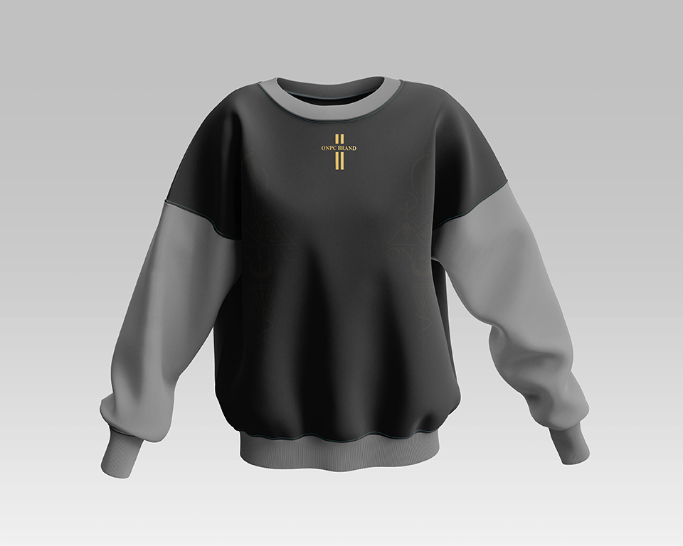
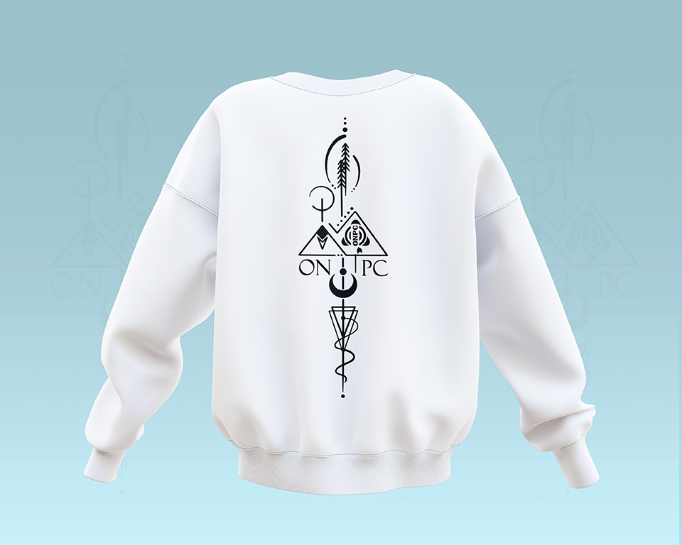
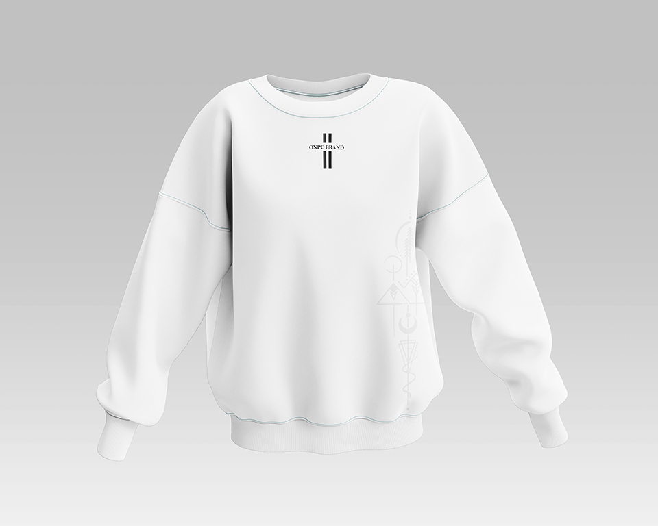

Design Textile et Impression DTF
Présentation du projet
Le projet consistait à concevoir des visuels destinés à l'impression DTF (Direct To Film) sur différents supports textiles tels que les t-shirts, sweats et vêtements personnalisés.
L'objectif était de produire des créations originales capables de transmettre un message, valoriser une identité ou simplement offrir un design esthétique et impactant.
Grâce à la technologie DTF, il est aujourd'hui possible d'obtenir des impressions de haute qualité avec des couleurs éclatantes et une excellente durabilité.
Objectifs du projet
- Créer des visuels modernes et attractifs
- Garantir une excellente qualité d'impression
- Adapter les créations aux contraintes du textile
- Répondre aux besoins spécifiques des clients
- Développer des designs uniques et mémorables
Types de créations réalisées
Les designs DTF peuvent être adaptés à de nombreux usages et secteurs d'activité. Au cours de ce projet, plusieurs styles graphiques ont été développés afin de répondre à différents besoins de personnalisation.
- Portraits illustrés personnalisés
- Designs noir et blanc artistiques
- Créations streetwear modernes
- T-shirts événementiels
- Designs promotionnels pour marques et entreprises
- Visuels inspirés de la culture africaine
- Créations typographiques et citations motivantes
Processus créatif
Chaque création débute par une phase de recherche et de réflexion afin de comprendre les besoins du client et l'objectif du design.
Les concepts sont ensuite développés à l'aide de logiciels de création graphique et optimisés pour garantir une excellente qualité d'impression sur textile.
Une attention particulière est accordée aux détails, aux couleurs, à la lisibilité et à l'impact visuel afin d'obtenir un résultat professionnel.




Logiciels utilisés
La réalisation des designs a nécessité l'utilisation de plusieurs outils de création graphique permettant d'assurer une qualité professionnelle et une préparation optimale pour l'impression DTF.
- Adobe Photoshop
- Adobe Illustrator
- Canva Pro
- Outils d'intelligence artificielle générative
Résultat final
Les créations obtenues offrent une excellente qualité visuelle, une forte personnalité graphique et une parfaite adaptation aux supports textiles.
Les designs réalisés permettent de transformer un simple vêtement en véritable support de communication, d'expression personnelle ou de valorisation de marque.
Grâce à l'impression DTF, les visuels conservent leur précision, leurs couleurs et leur impact même après plusieurs utilisations et lavages.
Conclusion
Le design textile constitue aujourd'hui un puissant moyen de communication visuelle et de personnalisation.
Ce projet démontre l'importance d'un travail graphique de qualité dans la création de vêtements personnalisés capables de transmettre un message, renforcer une identité et attirer l'attention.
Chez Afro Vecteur, nous concevons des créations DTF originales et professionnelles adaptées aux particuliers, aux entreprises, aux événements et aux marques souhaitant se démarquer.
Vous avez un projet similaire ?
Afro Vecteur vous accompagne dans la création de designs textiles, de visuels DTF et de supports de communication professionnels.
Demander un devis